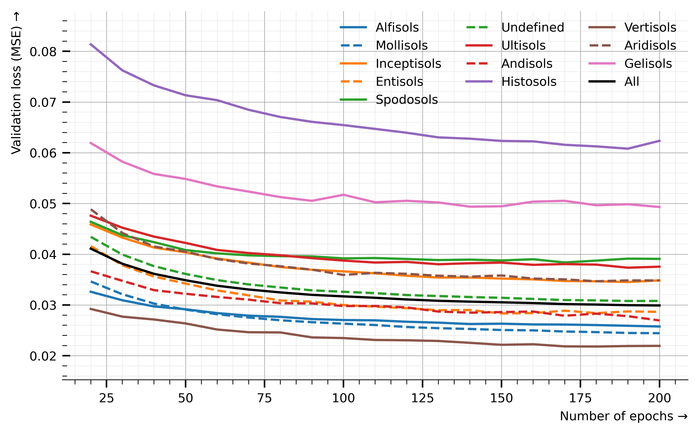

if 'google.colab' in str(get_ipython()):
from google.colab import drive
drive.mount('/content/drive', force_remount=False)
!pip install mirzai
else:4.4. Validation curve by Soil Taxonomy Orders (CNN)
CNN validation loss by Soil Taxonomy Orders

# Python utils
import math
from collections import OrderedDict
from tqdm.auto import tqdm
from pathlib import Path
import pickle
# mirzai utilities
from mirzai.data.loading import load_kssl
from mirzai.training.core import load_dumps
from mirzai.vis.core import (centimeter, PRIMARY_COLOR,
set_style, DEFAULT_STYLE)
# Data science stack
import pandas as pd
import numpy as np
# Data vis.
import matplotlib.pyplot as plt
from matplotlib.gridspec import GridSpec
from cycler import cycler
import warnings
warnings.filterwarnings('ignore')Load and transform
src_dir = 'data'
fnames = ['spectra-features.npy', 'spectra-wavenumbers.npy',
'depth-order.npy', 'target.npy',
'tax-order-lu.pkl', 'spectra-id.npy']
X, X_names, depth_order, y, tax_lookup, X_id = load_kssl(src_dir, fnames=fnames)Experiment
Utilities
def format_tax_losses(losses, idx=None):
if idx is None:
losses_tax = []
for i, loss in enumerate(losses):
df_seed = pd.DataFrame(loss['valid_tax']).T
df_seed.index.name = 'tax'
df_seed.reset_index()
losses_tax.append(df_seed)
df = pd.concat(losses_tax)
return df.reset_index().groupby('tax').mean().reset_index()
else:
df_seed = pd.DataFrame(losses[idx]['valid_tax']).T
df_seed.index.name = 'tax'
df_seed.reset_index()
return df_seedSetup
dest_dir_loss = Path('dumps/cnn/train_eval/all/losses')
losses = load_dumps(dest_dir_loss)df_loss_all_mean = pd.DataFrame([loss['valid'] for loss in losses]).mean()df_loss_all_mean.valuesarray([0.14582814, 0.09014846, 0.07893631, 0.07276324, 0.07073818,
0.06707921, 0.0625751 , 0.05599464, 0.05248269, 0.04967756,
0.046866 , 0.04880906, 0.05141463, 0.05284351, 0.05540708,
0.05563474, 0.05164713, 0.04905587, 0.04571185, 0.04315375,
0.04110955, 0.04223788, 0.04455341, 0.04628459, 0.05034362,
0.05034709, 0.04645335, 0.04503993, 0.0423074 , 0.04000635,
0.03812311, 0.03942788, 0.04132601, 0.04227399, 0.04667591,
0.04809851, 0.04418473, 0.04192892, 0.04063427, 0.03810782,
0.03614225, 0.03727109, 0.03956102, 0.04122068, 0.04300844,
0.04640118, 0.04282962, 0.04091016, 0.03853729, 0.03682557,
0.03487694, 0.03627837, 0.03842524, 0.03981313, 0.04410538,
0.04434885, 0.04282881, 0.03975203, 0.03722999, 0.03535308,
0.03379202, 0.03589583, 0.03702463, 0.03876628, 0.04165303,
0.04548378, 0.04082348, 0.03925791, 0.03737891, 0.0351957 ,
0.03304794, 0.03445445, 0.03572285, 0.03869938, 0.04030689,
0.04104632, 0.04048262, 0.03780278, 0.03554481, 0.03410327,
0.03247798, 0.03368324, 0.03557672, 0.03649407, 0.03866227,
0.04052344, 0.03961371, 0.03757647, 0.0350988 , 0.03336657,
0.03200022, 0.03318095, 0.03569654, 0.0362442 , 0.03761844,
0.04199123, 0.03784717, 0.03650881, 0.0344024 , 0.03328214,
0.03169661, 0.03307035, 0.0344853 , 0.03680656, 0.03922563,
0.04119334, 0.03634852, 0.03607549, 0.03402154, 0.03302471,
0.03142086, 0.0328199 , 0.03437598, 0.03562572, 0.03644703,
0.03928935, 0.03724415, 0.0347058 , 0.0335458 , 0.03231729,
0.03109171, 0.03247988, 0.0336959 , 0.03519582, 0.035883 ,
0.03786512, 0.03678176, 0.0361663 , 0.03366792, 0.03258806,
0.03082712, 0.03266753, 0.03334443, 0.0340696 , 0.03588395,
0.03690009, 0.03612227, 0.0347346 , 0.03323 , 0.032378 ,
0.03065846, 0.03213505, 0.0328987 , 0.03498865, 0.03602875,
0.03856968, 0.03543443, 0.0344587 , 0.03336348, 0.03221112,
0.0305272 , 0.03203912, 0.03337082, 0.03419619, 0.03735174,
0.03675175, 0.03624353, 0.03369276, 0.03310249, 0.03192003,
0.03038229, 0.03181916, 0.03348516, 0.03550255, 0.03607852,
0.03806242, 0.03534237, 0.03439606, 0.03301949, 0.03169708,
0.03017788, 0.03145204, 0.03313161, 0.03380575, 0.03539771,
0.03568755, 0.03461054, 0.03325683, 0.03267145, 0.03180435,
0.03008223, 0.0319777 , 0.03314908, 0.03342559, 0.03488767,
0.03633015, 0.03424385, 0.03341905, 0.03243577, 0.0317504 ,
0.02996512, 0.0314795 , 0.0332628 , 0.03418779, 0.03427937,
0.0358278 , 0.03570055, 0.03365938, 0.03267484, 0.03144413,
0.02991178])# Exclude "Oxisols" as too few samples
tax_of_interest = {k: v for k, v in tax_lookup.items() if k != 'oxisols'}
tax_of_interest{'alfisols': 0,
'mollisols': 1,
'inceptisols': 2,
'entisols': 3,
'spodosols': 4,
'undefined': 5,
'ultisols': 6,
'andisols': 7,
'histosols': 8,
'vertisols': 10,
'aridisols': 11,
'gelisols': 12}df = format_tax_losses(losses, idx=None).filter(items=tax_of_interest.values(), axis=0); df| tax | 0 | 1 | 2 | 3 | 4 | 5 | 6 | 7 | 8 | ... | 191 | 192 | 193 | 194 | 195 | 196 | 197 | 198 | 199 | 200 | |
|---|---|---|---|---|---|---|---|---|---|---|---|---|---|---|---|---|---|---|---|---|---|
| 0 | 0 | 0.136776 | 0.056102 | 0.051624 | 0.049182 | 0.046964 | 0.046138 | 0.043792 | 0.039819 | 0.038829 | ... | 0.026873 | 0.027761 | 0.028256 | 0.028500 | 0.029622 | 0.029936 | 0.027817 | 0.027758 | 0.026603 | 0.025761 |
| 1 | 1 | 0.108970 | 0.074844 | 0.066805 | 0.060365 | 0.060410 | 0.057207 | 0.053487 | 0.046880 | 0.044224 | ... | 0.025806 | 0.027472 | 0.028190 | 0.028275 | 0.029406 | 0.029591 | 0.027757 | 0.026725 | 0.025784 | 0.024443 |
| 2 | 2 | 0.179343 | 0.080996 | 0.071688 | 0.070212 | 0.064672 | 0.065054 | 0.060657 | 0.055836 | 0.054061 | ... | 0.036132 | 0.037807 | 0.038594 | 0.039017 | 0.039383 | 0.039225 | 0.038377 | 0.037397 | 0.036353 | 0.034852 |
| 3 | 3 | 0.166356 | 0.087728 | 0.078601 | 0.075305 | 0.066709 | 0.067684 | 0.064100 | 0.057511 | 0.054260 | ... | 0.029942 | 0.031722 | 0.032132 | 0.032915 | 0.035358 | 0.035649 | 0.031892 | 0.030620 | 0.030083 | 0.028646 |
| 4 | 4 | 0.197614 | 0.083122 | 0.072006 | 0.068903 | 0.068574 | 0.066645 | 0.065523 | 0.062196 | 0.057514 | ... | 0.039557 | 0.039785 | 0.040462 | 0.042845 | 0.044306 | 0.044326 | 0.041461 | 0.040120 | 0.039678 | 0.039088 |
| 5 | 5 | 0.153747 | 0.107503 | 0.092829 | 0.084751 | 0.082516 | 0.076731 | 0.070696 | 0.062839 | 0.057833 | ... | 0.032669 | 0.034629 | 0.035730 | 0.035848 | 0.037953 | 0.037656 | 0.035190 | 0.034110 | 0.032548 | 0.030803 |
| 6 | 6 | 0.152534 | 0.064571 | 0.060710 | 0.058852 | 0.059420 | 0.059187 | 0.055980 | 0.054683 | 0.053309 | ... | 0.038558 | 0.039243 | 0.041479 | 0.041662 | 0.043007 | 0.042023 | 0.040298 | 0.040001 | 0.038738 | 0.037550 |
| 7 | 7 | 0.169730 | 0.083335 | 0.069036 | 0.065518 | 0.060544 | 0.063257 | 0.060464 | 0.051612 | 0.047301 | ... | 0.029281 | 0.031648 | 0.032247 | 0.031448 | 0.033532 | 0.033072 | 0.031675 | 0.029762 | 0.028676 | 0.026958 |
| 8 | 8 | 0.293496 | 0.203235 | 0.151515 | 0.138089 | 0.133604 | 0.122406 | 0.117703 | 0.106278 | 0.100228 | ... | 0.064171 | 0.067258 | 0.070667 | 0.069261 | 0.071917 | 0.070003 | 0.069514 | 0.068517 | 0.065218 | 0.062353 |
| 10 | 10 | 0.106765 | 0.070213 | 0.062454 | 0.057815 | 0.055850 | 0.050079 | 0.046619 | 0.039625 | 0.037970 | ... | 0.022706 | 0.024911 | 0.024899 | 0.025516 | 0.026076 | 0.025788 | 0.025336 | 0.023495 | 0.023181 | 0.021947 |
| 11 | 11 | 0.132431 | 0.100199 | 0.091722 | 0.084992 | 0.084716 | 0.081571 | 0.074755 | 0.068620 | 0.063533 | ... | 0.037069 | 0.039889 | 0.041584 | 0.039900 | 0.042083 | 0.039988 | 0.039025 | 0.038969 | 0.037147 | 0.034838 |
| 12 | 12 | 0.269967 | 0.159637 | 0.136138 | 0.130422 | 0.111166 | 0.105764 | 0.104931 | 0.086638 | 0.082811 | ... | 0.050695 | 0.054884 | 0.057524 | 0.055711 | 0.055529 | 0.056401 | 0.056093 | 0.053794 | 0.052021 | 0.049314 |
12 rows × 202 columns
indexes = [i for i in range(len(losses[0]['valid_tax'])) if not i%10]df_selected_tax = df[indexes[2:]].T
df_selected_all = df_loss_all_mean[indexes[2:]]
df_selected_tax| 0 | 1 | 2 | 3 | 4 | 5 | 6 | 7 | 8 | 10 | 11 | 12 | |
|---|---|---|---|---|---|---|---|---|---|---|---|---|
| 20 | 0.032607 | 0.034638 | 0.045875 | 0.041617 | 0.046397 | 0.043431 | 0.047601 | 0.036641 | 0.081370 | 0.029222 | 0.048862 | 0.061913 |
| 30 | 0.030932 | 0.032115 | 0.043283 | 0.037829 | 0.043756 | 0.039932 | 0.045231 | 0.034765 | 0.076238 | 0.027701 | 0.044190 | 0.058242 |
| 40 | 0.029718 | 0.030283 | 0.041323 | 0.035609 | 0.042389 | 0.037653 | 0.043479 | 0.032929 | 0.073283 | 0.027140 | 0.041524 | 0.055829 |
| 50 | 0.029158 | 0.029090 | 0.040370 | 0.034228 | 0.040828 | 0.036120 | 0.042232 | 0.032216 | 0.071332 | 0.026365 | 0.040523 | 0.054847 |
| 60 | 0.028400 | 0.028178 | 0.039149 | 0.032863 | 0.040171 | 0.034912 | 0.040847 | 0.031589 | 0.070367 | 0.025167 | 0.039058 | 0.053372 |
| 70 | 0.027902 | 0.027529 | 0.038346 | 0.031901 | 0.039783 | 0.034051 | 0.040239 | 0.031052 | 0.068467 | 0.024631 | 0.038168 | 0.052347 |
| 80 | 0.027659 | 0.026991 | 0.037488 | 0.030898 | 0.039623 | 0.033449 | 0.039798 | 0.030357 | 0.067050 | 0.024588 | 0.037636 | 0.051267 |
| 90 | 0.027229 | 0.026614 | 0.036943 | 0.030656 | 0.039570 | 0.032891 | 0.039234 | 0.030320 | 0.066097 | 0.023612 | 0.036969 | 0.050530 |
| 100 | 0.027036 | 0.026320 | 0.036623 | 0.029997 | 0.039183 | 0.032602 | 0.038751 | 0.029793 | 0.065453 | 0.023484 | 0.035918 | 0.051719 |
| 110 | 0.026978 | 0.026052 | 0.036248 | 0.029669 | 0.039254 | 0.032338 | 0.038368 | 0.029803 | 0.064705 | 0.023107 | 0.036339 | 0.050241 |
| 120 | 0.026698 | 0.025662 | 0.035772 | 0.029381 | 0.039068 | 0.031964 | 0.038495 | 0.029521 | 0.063948 | 0.023047 | 0.036142 | 0.050535 |
| 130 | 0.026518 | 0.025433 | 0.035409 | 0.028974 | 0.038853 | 0.031759 | 0.038028 | 0.028710 | 0.063033 | 0.022909 | 0.035758 | 0.050205 |
| 140 | 0.026253 | 0.025275 | 0.035423 | 0.029010 | 0.038941 | 0.031570 | 0.038232 | 0.028489 | 0.062779 | 0.022545 | 0.035582 | 0.049381 |
| 150 | 0.026318 | 0.025069 | 0.035212 | 0.028338 | 0.038775 | 0.031421 | 0.038360 | 0.028602 | 0.062334 | 0.022152 | 0.035817 | 0.049453 |
| 160 | 0.026169 | 0.025002 | 0.035056 | 0.028403 | 0.039017 | 0.031195 | 0.037916 | 0.028707 | 0.062255 | 0.022264 | 0.035208 | 0.050368 |
| 170 | 0.026144 | 0.024773 | 0.034726 | 0.028882 | 0.038378 | 0.030972 | 0.038065 | 0.027879 | 0.061568 | 0.021844 | 0.035046 | 0.050528 |
| 180 | 0.026045 | 0.024655 | 0.034677 | 0.028401 | 0.038746 | 0.030909 | 0.037958 | 0.028300 | 0.061259 | 0.021814 | 0.034687 | 0.049658 |
| 190 | 0.025905 | 0.024487 | 0.034526 | 0.028732 | 0.039135 | 0.030784 | 0.037352 | 0.027796 | 0.060807 | 0.021915 | 0.034836 | 0.049858 |
| 200 | 0.025761 | 0.024443 | 0.034852 | 0.028646 | 0.039088 | 0.030803 | 0.037550 | 0.026958 | 0.062353 | 0.021947 | 0.034838 | 0.049314 |
Plot
def plot_val_losses_tax(df_tax, df_all, tax_lookup,
figsize=(16*centimeter, 10*centimeter), dpi=600):
# Layout
fig = plt.figure(figsize=figsize, dpi=600)
gs = GridSpec(nrows=1, ncols=1)
ax = fig.add_subplot(gs[0, 0])
cc = (cycler(color=[f'C{i}' for i in range(7)]) *
cycler(linestyle=['-', '--']))
epochs = df_tax.index.to_numpy()
# Plots
for tax_label, tax_idx in tax_lookup.items():
#ax.plot(epochs, np.mean(deltas[:,:,tax_idx], axis=0),
ax.plot(epochs, df_tax.loc[:, tax_idx],
label=tax_label.capitalize(),
**list(cc)[tax_idx])
ax.plot(epochs, df_all,
label='All',
c='black')
# Ornaments
ax.legend(loc='best', frameon=False, ncol=3)
#ax.set_ylabel('$MSE_{test} - MSE_{train}$ →', loc='top')
ax.set_ylabel('Validation loss (MSE) →', loc='top')
ax.set_xlabel('Number of epochs →', loc='right')
ax.grid(True, "minor", color="0.85", linewidth=0.2, zorder=-2)
ax.grid(True, "major", color="0.65", linewidth=0.4, zorder=-1)
plt.tight_layout()#FIG_PATH = Path('nameofyourfolder')
FIG_PATH = Path('images')
set_style(DEFAULT_STYLE)
plot_val_losses_tax(df_selected_tax, df_selected_all, tax_of_interest)
# To save/export it
plt.savefig(FIG_PATH/'validation_loss_tax.png', dpi=600, transparent=True, format='png')